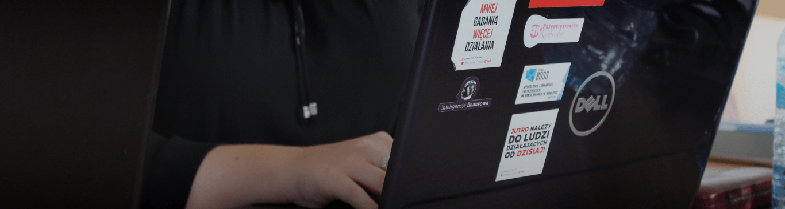
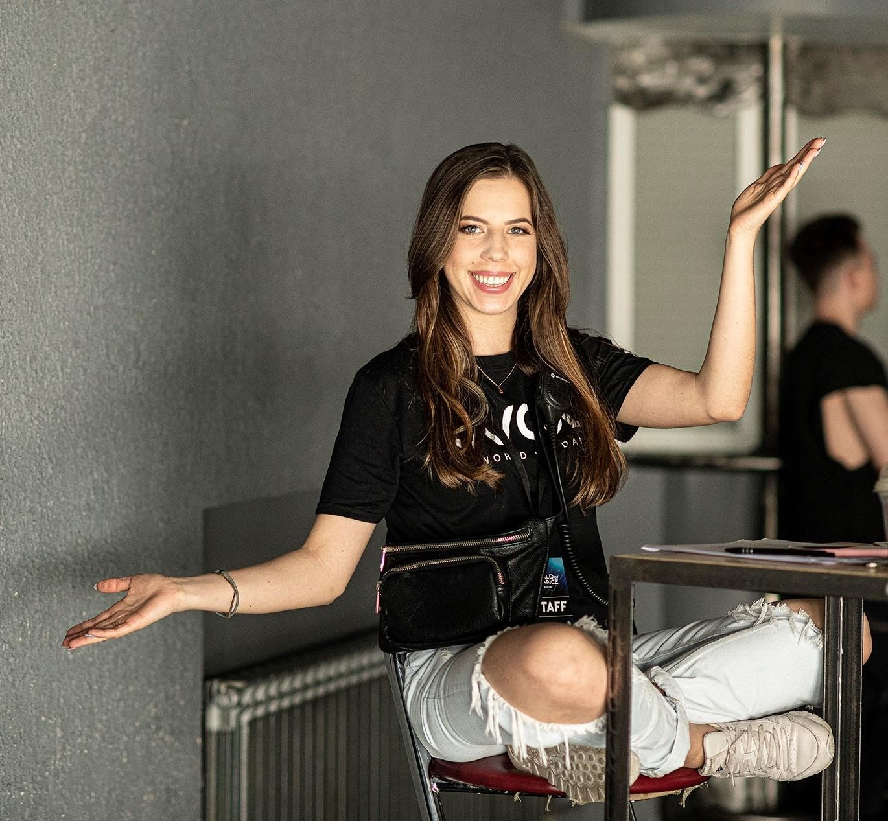

Artykuły i wywiady pisane przez członków SF BCC, o biznesie, rozwoju i życiu w organizacji.

Rozmowa z Martyną Wołosewicz, byłą Koordynator Działu HR i projektu "Przedsiębiorcza Kobieta", o tym co realnie daje działalność w SF BCC.
Czytaj dalejSkoro głównym celem każdego przedsiębiorcy jest zysk, to czy jest tutaj miejsce na etykę? Sabina Sęk o tym, dlaczego "ethics pays" to więcej niż hasło.
Czytaj dalejDołącz do jednego z 14 regionów SF BCC i zdobądź pierwsze doświadczenie w zarządzaniu projektami, pozyskiwaniu partnerów i pracy z mediami.